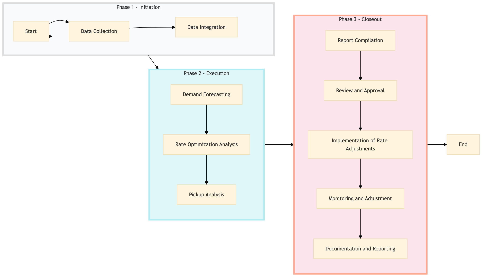

| Role | Steps |
|---|---|
| Revenue Manager | 1.1 1.2 2.1 2.2 2.3 3.1 3.3 3.4 3.5 |
| Executive Housekeeper | 3.2 |
| General Manager | 3.2 |
| Step | Name | Role | System | Input | Output | KPI | Dec? | Exc? | Pain Point / Risk |
|---|---|---|---|---|---|---|---|---|---|
| 1.1 | Data Collection | Revenue Manager | Oracle OPERA Cloud | Historical booking data, current occupancy rates | Collected data file | Less than 2 hours | N | Y | Inaccurate or incomplete data from Oracle OPERA Cloud |
| 1.2 | Data Integration | Revenue Manager | IDeas G3 RMS | Collected data file | Integrated data set | Less than 1 hour | N | Y | Data synchronization issues between Oracle OPERA Cloud and IDeas G3 RMS |
| 2.1 | Demand Forecasting | Revenue Manager | IDeas G3 RMS | Integrated data set | Forecasted demand report | Less than 4 hours | N | Y | Inaccurate forecasting due to external factors not captured in the model |
| 2.2 | Rate Optimization Analysis | Revenue Manager | IDeas G3 RMS | Forecasted demand report | Recommended rate adjustments | Less than 3 hours | N | Y | Balancing revenue and occupancy rates to maximize profitability |
| 2.3 | Pickup Analysis | Revenue Manager | SynXis CRS | Current booking data | Pickup analysis report | Less than 2 hours | N | Y | Inconsistent pickup rates across different channels |
| 3.1 | Report Compilation | Revenue Manager | Microsoft Power BI | Forecasted demand report, recommended rate adjustments, pickup analysis report | Final report with insights and recommendations | Less than 2 hours | N | Y | Complex data visualization to ensure clarity in the final report |
| 3.2 | Review and Approval | Executive Housekeeper, General Manager | Microsoft Power BI | Final report with insights and recommendations | Approved action plan | Less than 1 hour | Y | N | Aligning different stakeholders on the recommended rate adjustments |
| 3.3 | Implementation of Rate Adjustments | Revenue Manager | Oracle OPERA Cloud, SynXis CRS | Approved action plan | Updated rate schedule | Less than 1 hour | N | Y | Synchronization issues between Oracle OPERA Cloud and SynXis CRS |
| 3.4 | Monitoring and Adjustment | Revenue Manager | Oracle OPERA Cloud, IDeas G3 RMS | Current occupancy rates, booking trends | Adjustment report | Daily monitoring | Y | N | Continuous monitoring to respond quickly to market changes |
| 3.5 | Documentation and Reporting | Revenue Manager | Microsoft Power BI | Adjustment report | Updated documentation and reporting for future reference | Less than 1 hour | N | Y | Maintaining accurate and up-to-date documentation |
The Demand Forecasting & Pickup Analysis process at a Marriott full-service hotel involves analyzing historical data and current trends to predict future demand and optimize room rates. This ensures optimal revenue management by adjusting pricing strategies based on anticipated occupancy levels.